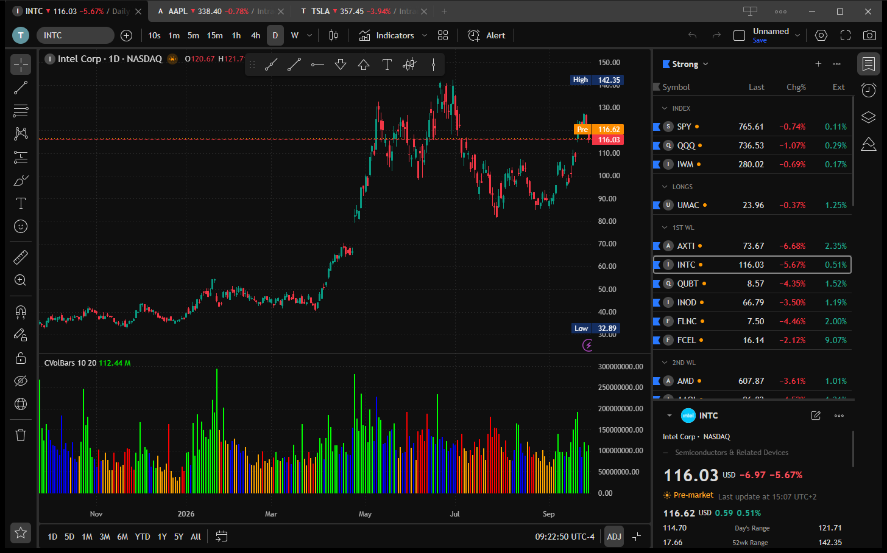
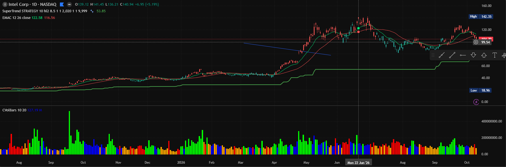
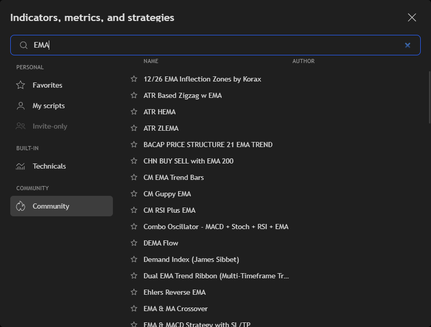
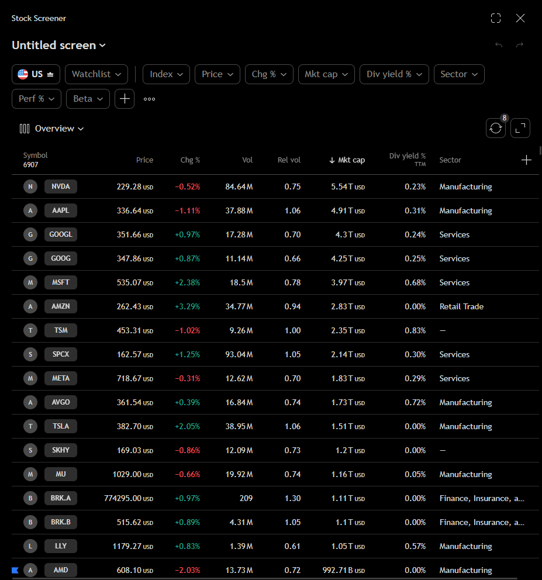
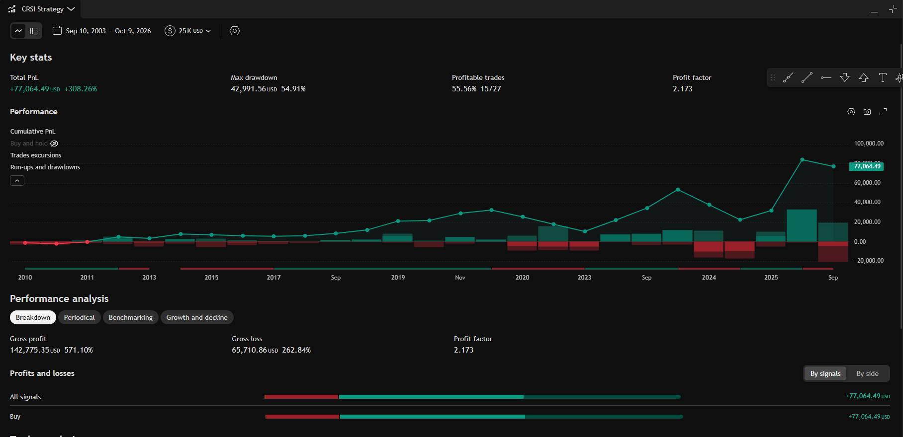
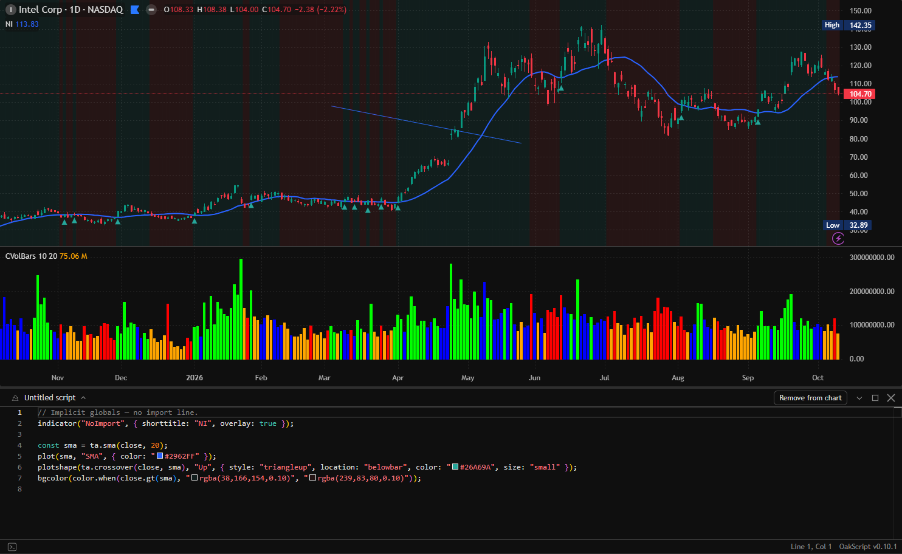

Free charting for your desktop.
OpenTrader is an open-source app for Windows, macOS and Linux. Charts, drawings, indicators, a stock screener, alerts and strategy testing in one window. Install it and it works: no account, no API key.
The online demo is the same app, nothing to install. Quotes are delayed by 15 minutes for now. Sponsoring is how that changes.

What you can do with it
It is an early project and some corners are still rough. This is what works today.
Charts
Candles, bars, lines, areas, Heikin Ashi, Renko, Kagi and range bars. Intervals from 10 seconds to a month, or your own.
Put several charts in one layout, drag the borders between them, and link symbol, interval and crosshair. Compare symbols on the same chart. Daily history goes back to 2003.

Indicators
More than a thousand, from the usual moving averages and oscillators to a large community collection. Search by name, star the ones you use and save sets as templates.

Stock screener
Filter close to 7,000 US stocks by price, change, market cap, sector, performance, dividend yield or beta. Sort by any column, choose the columns you want and save the screen for later.

Strategy tester
Run a strategy over the chart's history. You get the key stats, the equity curve, a breakdown of profits and losses and the full list of trades, with a CSV export.

Your own scripts
Write an indicator or a strategy in the built-in OakScript editor and add it to the chart. Your scripts sit next to the built-in ones.

Drawing tools
86 of them: trend lines, channels, pitchforks, Fibonacci, Gann, patterns, Elliott waves, long and short positions, text and shapes. Magnet, lock, templates, and a favourites bar you can park where you like.
Alerts
On a price, an indicator value or a drawing. If the app was closed, it checks what it missed at the next start. Alerts can also be posted to a webhook.
Watchlists
Several lists with sections and colour flags. Select many rows at once, drag them around, and read the key stats of a symbol in the details pane.
Layouts, tabs and windows
Save layouts, work in tabs, open a second window for another screen. Snapshots, chart data export, dark and light themes. The app updates itself.
What it does not do: there is no broker connection, no news feed and no social side. OpenTrader is for charting and research.
Three libraries you can use on their own
The parts that do the heavy work in OpenTrader are published separately. If you build something with charts, take them.
lightweight-charts-indicators
Technical analysis indicators ready to plot on a lightweight-charts chart. The whole indicator list in OpenTrader comes from here.
npm install lightweight-charts-indicators
lightweight-charts-drawing
Lines, channels, pitchforks, Fibonacci, Gann, patterns, Elliott waves, forecasting, volume profiles, shapes and text, with sensible defaults, labels and hit testing.
npm install lightweight-charts-drawing
oakscriptjs
The engine behind the script editor. Series maths, technical analysis functions, plots and strategy orders, in plain JavaScript or TypeScript.
npm install oakscriptjs
The app is free. Running it is not.
Market data, servers and development tools are billed every month. Donations pay that bill. Only the monthly total is published, here and in the app under Settings > About.
The data you get today is the plan the project can afford: quotes delayed by 15 minutes, and five years of second and minute history. More funding means a better data plan. Live streaming quotes come first, deeper history after that.
Above the monthly costs
Live streaming quotes instead of a 15 minute delay. Then more years of intraday history.
Monthly costs covered
Data, servers and tools are paid and the project runs without a deficit.
Delayed data
Quotes 15 minutes late. Second and minute history limited to five years. Daily history from 2003.
Try it. It takes a minute.
One installer, nothing to configure. Or open the demo in your browser.